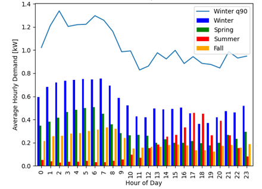

analysis package
The analysis packages provided provide some examples of the potential uses of oTherm GSHP data. These are provided as is and have the following limitations:
Each site has a single heat pump. The analyses presented can, in the future, be extended to multiple pieces of equipment.
Modules
analysis.daily_summaries module
Calculation of daily performance metrics for a given piece of equipment (e.g. a heat pump). This function is also embedded in oTherm instance and can be updated daily as a cron job. Included here to document methods and allow for customization.
- Daily metrics include, each integrated for one day:
Heating and cooling degree days, relative to 65F base temperature
Heat pump run time (hours)
Heat pump energy usage (kWh)
Auxiliary heat energy usage (kWh)
Thermal energy generated by heat pump under heating and cooling modes (MBtu)
Thermal energy exchanged with the ground (MBtu)
Average outdoor air temperature (F)
Source minimum and maximum temperatures (F)
Number of monitoring records for day
Note
Modifying this script will not change calculations in oTherm instance. See oTherm instance administrator to update codebase.
- analysis.daily_summaries.create_daily_summaries(data, heatpump_threshold_watts)
- Parameters
data (pandas.DataFrame) – Heat pump operating data from oTherm db
heatpump_threshold_watts (float) – Threshold to determine if heat pump is on or off.
- Returns
pandas.DataFrame
The returned DataFrame contains daily summary metrics described above
analysis.load_summary module
- analysis.load_summary.load_summary_graph(site, ds)
- Parameters
ds (DataFrame) – Pandas ddataframe containing daily summaries
site (dict) – Dataclass object containing site information
analysis.ewt_violins module
Creates histograms of the heat pump entering water temperature averaged on hourly intervals using the Seaborn library. When multiple site names are provided, histograms are plotted along the x axis and labeled with the site name.
When multiple sites are plotted, the seaborn.violinplot parameters are set to prodcue histograms that are equal width with the area of each mode scaled to the relative number of hours in heating or cooling.
- analysis.ewt_violins.determine_mode(row)
- Parameters
row – a row in a pandas DataFrame
- Returns
new column in the DataFrame, that identifies when heat pump is heating or cooling
- analysis.ewt_violins.ewt_violins(site_names, start_date, end_date, db)
- Parameters
site_names (list) – A list of site names to include in analyis. Each site will have it’s own violin plot
start_date (str) – Start date of analysis in format ‘YYYY-MM-DD’
end_date (str) – End date of analysis in format ‘YYYY-MM-DD’
timezone (str) – Timezone of installation
db (str) – oTherm database to use for analysis
- Returns
The image is written to a file in the ../temp_files directory
- Return type
image file
Example output:

analysis.geoexchange_proxies module
analysis.hp_mfr_plots module
analysis.kwh_per_sf module
One particularly helpful analysis that can be accomplished with very simple monitoring equipment is the energy usage as a function of conditioned area and outdoor air temperature. One application of this analysis offers an opportunity to compare the efficiency of different technologies, such as air-source and ground-source heat pumps over a wide range of outdoor weather conditions (e.g., Ueno and Loomis, 2015).
This module creates a scatterplot of energy use intensity as a function of average daily outdoor air temperature.
- analysis.kwh_per_sf.kwh_vs_oat(site_names, start_date, end_date, db)
- Parameters
site_names (list) – List of site names, as strings
start_date (str) – Beginning date of request, such as ‘2015-01-01’
end_date (str) – End date of request
symbol_colors (dict) – Dictionary of colors for graph symbols with site name as keys
db (str) – The name of the database to pull operating data from
Example output:

analysis.load_factor module
Because adoption of GSHP systems will often replace fossil-fuel fired systems and represent more energy intensive appliances in a home, electric utilities are also interested in the load factors for typical residential GSHP systems and the month-to-month variation in load factors over the course of a year. For the purposes here, the load factor is defined as the ratio of the electricity consumed over a period of time, such as one month, to the consumption that would have occurred if the peak demand operated over the entire month. The load factor ranges from 0 to 1, with higher values representing more uniform and predictable demand.
Note
runs correctly with limited oTherm data, still needs full testing
- analysis.load_factor.generate_csv(data, site_name)
- Parameters
data (pandas.DataFrame) – Heat pump operating data with datetime index
site_name (str) – Name of the site to analyze. At present, assumes a single heat pump at each site.
- Returns
Produces a csv file with the following columns:
month_and_year
year and month of analysis
Compressor (kWh)
total energy consumption of compressor
Auxiliary (kWh)
total energy consumption of compressor
Total Load (kWh)
sum of Compressor and Auxiliary energy consumption
Compressor Peak (hourly)
peak hourly electric power (kW) for compressor
Auxiliary Peak (hourly)
peak hourly electric power (kW) for auxiliary
Total Peak (hourly)
peak hourly electric power (kW) over period
Load Factor (Total)
calculated load factor for month
intervals
number of 1-minute interval data over month
completeness
number of intervals divided by minutes in month
- Return type
csv file
analysis.spf_with_uncertainty module
The seasonal performance factor (SPF) is a metric used to evaluate the performance of installed heat pumps. SPF values are sometimes separated into monthly values or values binned on ranges of entering water temperatures.
In heating mode, the SPF is calculated similarly to the COP. The difference is that COP values are determined under laboratory conditions while the SPF values are calculated using real-world operational data. Further, while COPs are measured with laboratory-grade equipment, calculation of SPFs may use estimated or proxy values in lieu of measured values, depending on the availability and quality of data. The heating SPF is calculated as the ratio of the heating or cooling provided and the electricity used to generate the heating or cooling:
When calculating SPF values, it is important to note the boundaries of the analysis. Spitler and Gehlin (2020) build upon the SEPEMO boundaries defined by Nordman and others (2012) to delineate a set of nested boundaries the include successively more components of the system.
Uncertainty Analysis One of the primary challenges in analyzing SPF values and comparing them between systems or with laboratory-rate COP values is the uncertainty associated with measurements used to calculate the SPF values. All measurements have some degree of associated uncertainty, but field measurements used to calculate SPF values generally are obtained with lower quality sensors than those used the laboratory to calculate COP values. As a result, they have a larger uncertainty due to sensor bias. Most studies that report measured performance (COP or SPF) do not quantify uncertainty (e.g., Puttagunta et al., 2010; Huelman et al., 2016) even though it can be significant.
Uncertainty due to sensor bias can be absolute or fractional. Absolute uncertainty has the same units as the value being measured. Fractional uncertainty is a fraction of the measured value. While the sensor bias for a given sensor will be constant, the impact on the uncertainty of the calculated SPF depends on the measured value, which changes in time. This is of particular concern with the uncertainty of a measure of temperature difference.
Calculating the SPF of GSHP systems relies on quantifying the geoexchange (thermal energy exchanged with the subsurface) and the electricity used by the GSHP system. Quantifying the geoexchange requires taking the product of density and specific heat capacity of the heat transfer fluid, the mass flow rate of the heat transfer fluid, and the temperature change of the heat transfer fluid across the heat pump. The uncertainties in the density and specific heat capacity values are very small relative to the other uncertainties and are typically ignored (Spitler et al., in prep). The temperature change of the heat transfer fluid has a constant absolute uncertainty, meaning that the true temperature change is within a fixed number of degrees from the measured value. Electricity usage measurements can have a fractional or absolute uncertainty, depending on the measurement method.
Because the uncertainty of geoexchange and the electrical consumption of the GSHP system (EQ and Ew, respectively) can change depending on the actual conditions, the uncertainty must be calculated separately for each timestep in the period of interest. Following Taylor (1997), the fractional uncertainty for thermal energy exchanged with the subsurface and the electrical consumption (eQ and eW, respectively) can then be calculated as:
Where Qi and Wi are the measured values of the geoexchange and electrical consumption, respectively. The quantities are summed over n time intervals, typically each 1-minute in duration.
The fractional uncertainty of the SPF value can then be obtained by adding the fractional uncertainties of the thermal energy exchanged with the subsurface and the electrical consumption of the GSHP system in quadrature:
While this description of uncertainty analysis focuses on SPF calculations, as they involve multiple types of measurements, uncertainty analysis should also be performed when calculating and reporting other key performance indicators.
Example output:

@author: Ryan Chase, University of New Hampshire
- analysis.spf_with_uncertainty.lag_temps(initial_data)
Lag temperature measurements by one value. Necessary for on-pipe measurements. Assumes that operating data is at minute-resolution and thermal response of temperature sensors is approximately one minute.
- Parameters
initial_data (pd.DataFrame) – Data as initially pulled from database.
- Returns
Dataframe with lagged temperature measurements. Additional column is as follows:
DeltaT
circulating fluid temperature change (as float)
- Return type
pd.DataFrame
- analysis.spf_with_uncertainty.to_kilowatts(data, derate, power_fac)
Unit conversion and electricity usage/heat rate adjustments.
Converts heat flow from btu/hr to kW and electricity from W to kW. Scales heat flow and electricity consumption values.
- Parameters
data (pd.DataFrame) – Heat pump operational data.
derate (float) – Scales heat flow values.
power_fac (float) – Scales electricity usage.
- Returns
Dataframe with unit conversion and necessary scaling applied to electricity usage and heatflow. Additional columns are as follows:
q
heat flow in kW with scaling (as float)
kw_used
electricity usage in kW with scaling (as float)
- Return type
pd.DataFrame
- analysis.spf_with_uncertainty.error_heat_from_ground(mrl_hr, E_deltaT, e_v, data)
Calculates error associated with heat transfer from ground.
Converts heat flow from btu/hr to kW and electricity from W to kW. Scales heat flow and electricity consumption values.
- Parameters
mrl_hr (float) – Max record length in hours.
E_deltaT (float) – Absolute uncertainty in temperature change of circulating fluid.
e_v (float) – Flow rate fractional error.
data (pd.Dateframe) – Heatpump operational data.
- Returns
Dataframe with additional columns associated with error in heat exchange rates. Additional columns are as follows:
e_deltaT
fractional uncertainty deltaT (as float)
e_q
fractional uncertainty heat transfer rate (as float)
E_q
absolute uncertainty heat transfer rate (as float)
tvalue
date time (as datetime64[ns, UTC])
timedelta
time since last timestep (as timedelta64[ns])
elapsed_hours
hours since last timestep (as float)
E_Q
absolute uncertainity in kWh to/from ground (as float)
- Return type
pd.DataFrame
- analysis.spf_with_uncertainty.elec_error_single_elec_measurement(e_e, error_data)
Calculates absolute electrical error.
For datasets that include a single electricity consumption value. Calculates absolute electrical error for each timestep in kWh.
- Parameters
e_e (float) – Fractional uncertainty of electricity usage.
error_data (pd.Dateframe) – Heatpump operational data.
- Returns
Dataframe with additional column for electricity usage uncertainty. Additional column is as follows:
E_W
absolute electrical uncertainity in kWh (as float)
- Return type
pd.DataFrame
- analysis.spf_with_uncertainty.heat_calcs_single_elec_measurement(error_data, pump_power)
Calculates heat flow and electricity usage during heating periods.
For datasets that include a single electricity consumption value. Considers electricity consumption of single stage circulating pump that will not contribute useful heat to building.
- Parameters
error_data (pd.Dateframe) – Heatpump operational data.
pump_power (float) – Electricity consumption of single stage circulating pump.
- Returns
Dataframe with additional columns associated with heatflow and electricity consumption. Additional columns are as follows:
electricity_kWh
electricity kWh used in heating mode (as float)
hfg
heat from ground in kWh (as float)
pump_power
pump electricity usage in Kw (as float)
heat_provided
heat provided to building in kWh (as float)
- Return type
pd.DataFrame
- analysis.spf_with_uncertainty.total_heat_sum_error(spf_heat_data)
Total values for heating and overall heating spf.
Uses heating operational data. Calculate total heat extracted from ground and absolute error. Also calculates spf and fractional error.
- Parameters
spf_heat_data (pd.Dateframe) – Heatpump operational data during heating.
- Returns
total_ground_heat (float) – Total heat from ground in kWh.
total_gh_error (float) – Absolute error of total heat from ground in kWh.
total_heat_spf (float) – Heating spf.
ah_e_spf (float) – Heating fractional uncertainity of SPF.
- analysis.spf_with_uncertainty.monthly_ground_heat(spf_heat_data, percent_max)
Calculates monthly heat flow and spf values for plotting.
Resamples data to monthly values. Determines which months have signifigant heating loads to be plotted. Calculates monthly spf values and absolute uncertainty for plotting.
- Parameters
spf_heat_data (pd.Dateframe) – Heatpump operational data during heating.
percent_max (float) – Multipled by highest heating month to determine minimum kWh to plot.
- Returns
Dataframe with additional columns associated with monthly heatflow and spf. Additional columns are as follows:
year
year of each timestep (as str)
month_and_year
year and month of each timestep (as str)
monthly_heating_spf
heating spf value for month (as float)
fhe
heating fractional uncertainity (as float)
fee
electric fractional uncertainity (as float)
e_spf
fractional uncertainity heating SPF (as float)
E_spf
absolute uncertainity heating SPF (as float)
- Return type
pd.DataFrame
analysis.time_of_day_usage module
There is a growing interest in quantifying hourly demand profiles for building heat and cooling to manage generation assets and explore models for demand-response programs (e.g., National Academies, 2021). While heat pump usage patterns tend to vary with season – with winters having higher demand in morning and summer a higher demand in the afternoon – specific usage patterns depend on preferences of building occupants and individual usage patterns. Quantifying patterns of usage across a large number of heat pumps in a given regions will help to inform utilities in forecasting weather-dependent generation patterns and identify opportunities for demand response measures.
This module calculates the aggregate statistics for kW on an hourly, time-of-day basis Currently calculates mean and 90th quantile for each hour and creates matplotlib plot. It is currently set up for a single year but should be extendable to multiple years.
- analysis.time_of_day_usage.hourly_daily_stats(site, hp_data)
- Parameters
site –
hp_data –
Example output:
{kind=link}